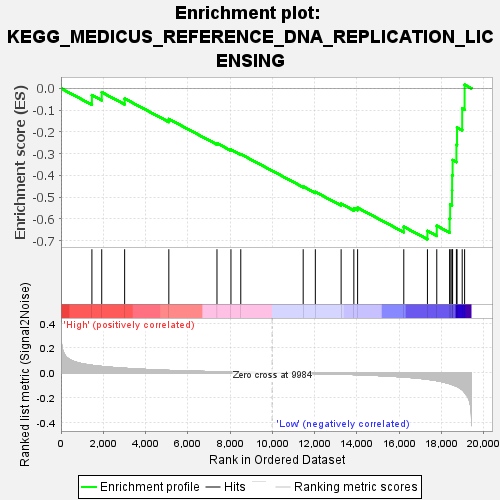
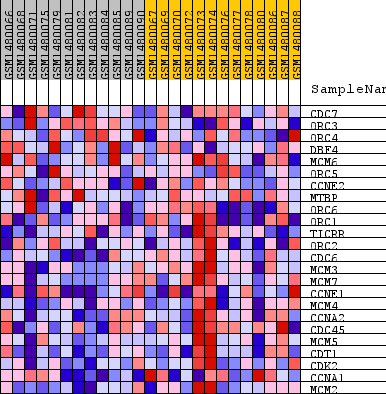
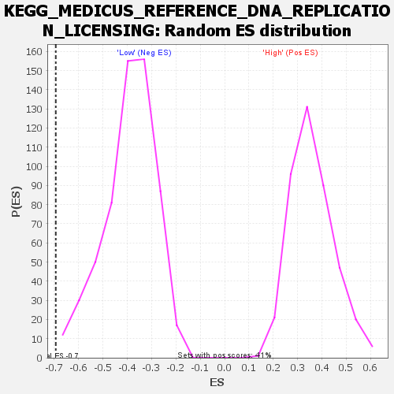

| Dataset | WG6v3.CPT1A.cls#High_versus_Low.CPT1A.cls#High_versus_Low_repos |
| Phenotype | CPT1A.cls#High_versus_Low_repos |
| Upregulated in class | Low |
| GeneSet | KEGG_MEDICUS_REFERENCE_DNA_REPLICATION_LICENSING |
| Enrichment Score (ES) | -0.69407535 |
| Normalized Enrichment Score (NES) | -1.7814349 |
| Nominal p-value | 0.0017006802 |
| FDR q-value | 0.06781137 |
| FWER p-Value | 0.182 |

| SYMBOL | TITLE | RANK IN GENE LIST | RANK METRIC SCORE | RUNNING ES | CORE ENRICHMENT | |
|---|---|---|---|---|---|---|
| 1 | CDC7 | CDC7 | 1462 | 0.060 | -0.0312 | No |
| 2 | ORC3 | ORC3 | 1927 | 0.051 | -0.0178 | No |
| 3 | ORC4 | ORC4 | 3011 | 0.036 | -0.0469 | No |
| 4 | DBF4 | DBF4 | 5102 | 0.019 | -0.1409 | No |
| 5 | MCM6 | MCM6 | 7380 | 0.008 | -0.2523 | No |
| 6 | ORC5 | ORC5 | 8041 | 0.006 | -0.2819 | No |
| 7 | CCNE2 | CCNE2 | 8506 | 0.005 | -0.3025 | No |
| 8 | MTBP | MTBP | 11459 | -0.005 | -0.4513 | No |
| 9 | ORC6 | ORC6 | 12034 | -0.006 | -0.4761 | No |
| 10 | ORC1 | ORC1 | 13254 | -0.011 | -0.5307 | No |
| 11 | TICRR | TICRR | 13856 | -0.014 | -0.5512 | No |
| 12 | ORC2 | ORC2 | 14034 | -0.015 | -0.5489 | No |
| 13 | CDC6 | CDC6 | 16219 | -0.034 | -0.6364 | No |
| 14 | MCM3 | MCM3 | 17338 | -0.052 | -0.6558 | Yes |
| 15 | MCM7 | MCM7 | 17780 | -0.063 | -0.6320 | Yes |
| 16 | CCNE1 | CCNE1 | 18389 | -0.088 | -0.5987 | Yes |
| 17 | MCM4 | MCM4 | 18412 | -0.089 | -0.5341 | Yes |
| 18 | CCNA2 | CCNA2 | 18501 | -0.094 | -0.4694 | Yes |
| 19 | CDC45 | CDC45 | 18507 | -0.095 | -0.3997 | Yes |
| 20 | MCM5 | MCM5 | 18529 | -0.096 | -0.3297 | Yes |
| 21 | CDT1 | CDT1 | 18709 | -0.108 | -0.2596 | Yes |
| 22 | CDK2 | CDK2 | 18739 | -0.110 | -0.1800 | Yes |
| 23 | CCNA1 | CCNA1 | 18983 | -0.136 | -0.0926 | Yes |
| 24 | MCM2 | MCM2 | 19097 | -0.156 | 0.0168 | Yes |

